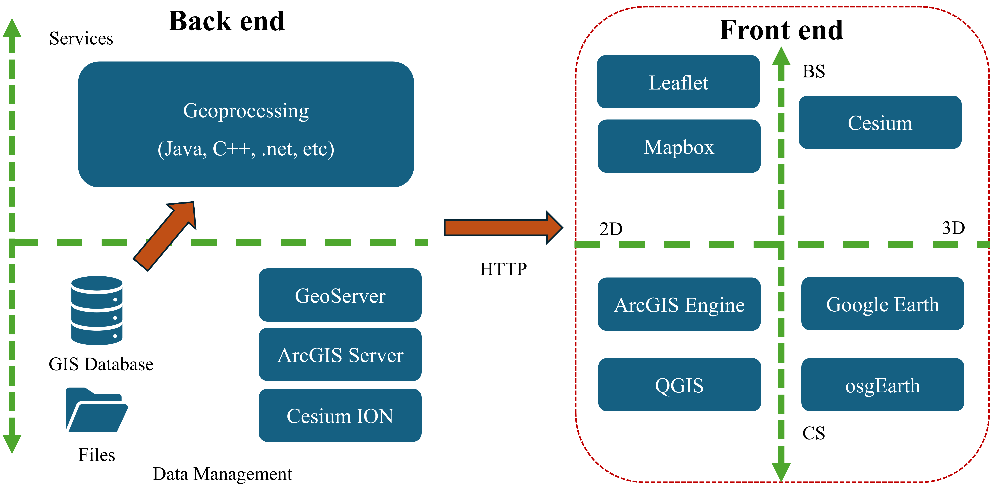

13. SQL#
SQL (Structured Query Language): SQL is a standard language for managing relational databases. It provides a set of commands for performing various operations such as querying data, updating data, creating and modifying database schema, and managing access controls.

13.1. Key Types in SQL#
13.1.1. Numeric Types#
INT(Integer): Represents whole numbers.DECIMAL: Represents fixed-point numbers with exact precision.CREATE TABLE Products ( ProductID INT PRIMARY KEY, Price DECIMAL(10, 2) );
13.1.2. String Types#
VARCHAR: Represents variable-length character strings with a maximum length specified.TEXT: Represents variable-length character strings with a maximum length that can be extremely large.CREATE TABLE Customers ( CustomerID INT PRIMARY KEY, FirstName VARCHAR(50), LastName VARCHAR(50), Address TEXT );
13.1.3. Date/Time Types#
DATE: Represents a date value without time.TIMESTAMP: Represents date and time values.CREATE TABLE Orders ( OrderID INT PRIMARY KEY, OrderDate DATE, LastUpdated TIMESTAMP );
13.1.4. Boolean Type#
BIT: Represents a single bit that can store boolean values (0 or 1).CREATE TABLE Employees ( EmployeeID INT PRIMARY KEY, IsActive BIT );
13.2. Database normalization#
Database normalization is a process used to organize a relational database into tables and columns to minimize redundancy and dependency. It aims to reduce data anomalies such as insertion, update, and deletion anomalies, which can occur when data is not properly organized.
Let’s illustrate normalization with a simple example:
Suppose we have a database to store information about students and the courses they are enrolled in. Initially, we might design a single table like this:
StudentCourses Table:
StudentID |
StudentName |
Course1 |
Course2 |
Course3 |
|---|---|---|---|---|
1 |
Alice |
Math |
Physics |
Chemistry |
2 |
Bob |
Physics |
Biology |
|
3 |
Carol |
Chemistry |
In this table, each row represents a student, and each column represents a course they are enrolled in. However, this table violates the principles of normalization because:
Data Redundancy: The
coursenames are repeated in multiple rows, leading to redundancy.Insertion Anomaly: If a
studentwants to enroll in morecoursesthan the available columns, we need to modify the table structure.Deletion Anomaly: If we delete a course from the database, we may lose information about which
studentswere enrolled in that course.Update Anomaly: If we update the name of a
course, we need to update it in multiple places, which can lead to inconsistencies.
To normalize this database, we can break it down into multiple tables. We’ll create separate tables for Students and Courses and introduce a linking table to represent the many-to-many relationship between them:
In this normalized schema:
Students Table stores information about
students.Courses Table stores information about
courses.Enrollments Table represents the
many-to-manyrelationship betweenstudentsandcourses, indicating which student is enrolled in which course.
Students Table:
StudentID |
StudentName |
|---|---|
1 |
Alice |
2 |
Bob |
3 |
Carol |
Courses Table:
CourseID |
CourseName |
|---|---|
1 |
Math |
2 |
Physics |
3 |
Chemistry |
4 |
Biology |
Enrollments Table:
StudentID |
CourseID |
|---|---|
1 |
1 |
1 |
2 |
1 |
3 |
2 |
2 |
2 |
4 |
3 |
3 |
13.3. Constraints in SQL#
13.3.1. Unique Constraint#
The unique constraint ensures that all values in a column are unique (i.e., no duplicates are allowed).
It can be applied to one or more columns in a table. If a unique constraint is defined on multiple columns, the combination of values across those columns must be unique.
CREATE TABLE Students (
StudentID INT PRIMARY KEY,
StudentName VARCHAR(50) UNIQUE,
Email VARCHAR(100) UNIQUE
);
In this example, both StudentName and Email columns have unique constraints, meaning that each student’s name and email must be unique within the table.
13.3.2. Check Constraint#
The check constraint is used to enforce a condition on the values allowed in a column. It ensures that all values inserted or updated in the column satisfy the specified condition.
CREATE TABLE Employees (
EmployeeID INT PRIMARY KEY,
Age INT CHECK (Age >= 18),
Department VARCHAR(50) CHECK (Department IN ('IT', 'Finance', 'HR'))
);
In this example, the check constraints ensure that the Age column contains values greater than or equal to 18 and the Department column only contains values IT, Finance, or HR.
13.3.3. Default Constraint#
The default constraint specifies a default value for a column when no value is explicitly provided during an insert operation. If a default constraint is defined on a column, the default value is used if no other value is specified.
CREATE TABLE Orders (
OrderID INT PRIMARY KEY,
OrderDate DATE DEFAULT CURRENT_DATE,
Status VARCHAR(20) DEFAULT 'Pending'
);
In this example, if no value is provided for the OrderDate column during an insert operation, the current date is automatically inserted. Similarly, if no value is provided for the Status column, ‘Pending’ is inserted by default.
13.3.4. Foreign Key Constraint#
The foreign key constraint establishes a relationship between two tables by enforcing referential integrity. It ensures that values in a column (or a set of columns) in one table match values in another table’s primary key or unique key.
CREATE TABLE Orders (
OrderID INT PRIMARY KEY,
CustomerID INT,
FOREIGN KEY (CustomerID) REFERENCES Customers(CustomerID)
);
In this example, the CustomerID column in the Orders table is a foreign key that references the CustomerID column in the Customers table, ensuring that only valid customer IDs can be inserted into the Orders table.
13.3.5. Comprehensive Example#
let’s create a comprehensive example using all four constraints: Unique, Check, Default, and Foreign Key.
Suppose we’re designing a database for a library management system. We’ll create tables for Books, Authors, and Members, and we’ll define various constraints to ensure data integrity.
In the
Authorstable, we enforce aunique constrainton theAuthorNamecolumn to ensure that each author’s name is unique.In the
Bookstable, we use aforeign key constraint(AuthorID) to establish a relationship with theAuthorstable. We also define acheck constrainton theStatuscolumn to ensure that it can only have specific values (Available,On Loan,Damaged). Additionally, we set adefaultvalue ofAvailablefor theStatuscolumn.In the
Memberstable, we enforceunique constraintson both theMemberNameandEmailcolumns to ensure that each member’s name and email are unique.In the
Loanstable, we useforeign key constraints(BookIDandMemberID) to establish relationships with theBooksandMemberstables, respectively. We also define acheck constrainton theReturnDatecolumn to ensure that it is greater than or equal to theLoanDate.
-- Create Authors table with unique constraint on AuthorID
CREATE TABLE Authors (
AuthorID INT PRIMARY KEY,
AuthorName VARCHAR(100) UNIQUE
);
-- Create Books table with foreign key constraint on AuthorID, check constraint on Status, and default constraint on Status
CREATE TABLE Books (
BookID INT PRIMARY KEY,
Title VARCHAR(200),
AuthorID INT,
Status VARCHAR(20) DEFAULT 'Available' CHECK (Status IN ('Available', 'On Loan', 'Damaged')),
FOREIGN KEY (AuthorID) REFERENCES Authors(AuthorID)
);
-- Create Members table with unique constraint on MemberID
CREATE TABLE Members (
MemberID INT PRIMARY KEY,
MemberName VARCHAR(100) UNIQUE,
Email VARCHAR(100) UNIQUE
);
-- Create Loans table with foreign key constraints on BookID and MemberID, and check constraint on ReturnDate
CREATE TABLE Loans (
LoanID INT PRIMARY KEY,
BookID INT,
MemberID INT,
LoanDate DATE DEFAULT CURRENT_DATE,
ReturnDate DATE CHECK (ReturnDate >= LoanDate),
FOREIGN KEY (BookID) REFERENCES Books(BookID),
FOREIGN KEY (MemberID) REFERENCES Members(MemberID)
);
13.4. DQL (Data Query Language)#
DQL is a subset of SQL used for retrieving data from the database. The primary command in DQL is SELECT, which is used to retrieve data from one or more tables based on specified criteria.
13.4.1. Join#
In SQL, joins are used to combine rows from two or more tables based on a related column between them.
Suppose we have two tables, Students and Courses Register, where Students contains information about students and Courses Register contains information about courses they are enrolled in. The tables are as follows:
Students Table:
StudentID |
StudentName |
|---|---|
1 |
Alice |
2 |
Bob |
3 |
Carol |
Courses Register Table:
CourseID |
CourseName |
StudentID |
|---|---|---|
1 |
Math |
1 |
2 |
Physics |
2 |
3 |
Chemistry |
1 |
Inner Join: Returns rows when there is at least one match in both tables based on the join condition.
SELECT * FROM Students INNER JOIN Courses ON Students.StudentID = CoursesRegister.StudentID;

Left Join (or Left Outer Join): Returns all rows from the left table (table1), and the matched rows from the right table (table2). If there is no match,
NULLvalues are returned for the columns from the right table.SELECT * FROM Students LEFT JOIN Courses ON Students.StudentID = CoursesRegister.StudentID;
Right Join (or Right Outer Join): Returns all rows from the right table (table2), and the matched rows from the left table (table1). If there is no match,
NULLvalues are returned for the columns from the left table.Full Outer Join: Returns all rows when there is a match in either left or right table. If there is no match,
NULLvalues are returned for the columns from the table without a match.
13.5. DML (Data Manipulation Language)#
DML is used to manipulate data stored in the database. It includes commands for inserting, updating, deleting, and querying data within tables.
Common DML commands include INSERT, UPDATE, DELETE, and SELECT.
13.5.1. Insert#

13.5.2. Update#

13.5.3. Delete#

13.6. Operators#
In SQL, operators are used to perform operations on data within queries. There are various types of operators in SQL, including arithmetic operators, comparison operators, logical operators, and more. Here’s an introduction to some common SQL operators with examples:

13.6.1. Arithmetic Operators#
Addition (
+), Subtraction (-), Multiplication (*), Division (/), and Modulus (%).
SELECT 10 + 5 AS Addition, 10 - 5 AS Subtraction, 10 * 5 AS Multiplication, 10 / 5 AS Division, 10 % 3 AS Modulus;
13.6.2. Comparison Operators#
Equal to (=), Not equal to (<> or !=), Greater than (>), Less than (<), Greater than or equal to (>=), Less than or equal to (<=).
SELECT * FROM Products WHERE Price > 100;
13.6.3. CONCAT and SUBSTRING Operator#
Concatenates two or more strings together.
SELECT FirstName || ' ' || LastName AS FullName FROM Customers;

13.6.4. IN Operator#
Checks if a value matches any value in a list.
SELECT * FROM Products WHERE Category IN ('Electronics', 'Appliances');
13.6.5. BETWEEN Operator#
Checks if a value is within a specified range.
SELECT * FROM Orders WHERE OrderDate BETWEEN '2022-01-01' AND '2022-01-31';
13.6.6. LIKE Operator#
Compares a value to similar values using wildcard characters (% for zero or more characters, _ for a single character).
SELECT * FROM Products WHERE ProductName LIKE 'Apple%';
13.6.7. IS NULL / IS NOT NULL Operators#
Checks if a value is NULL or not NULL.
SELECT * FROM Employees WHERE ManagerID IS NULL;
13.6.8. ANY / ALL Operators#
The
ANYoperator returnstrueif the comparison istruefor at least one of the values returned by the subquery.SELECT * FROM Products WHERE Price > ANY (SELECT Price FROM SpecialOffers);
This query selects all
productswith apricegreater than anypricelisted in theSpecialOfferstable.
The
ALLoperator returnstrueif the comparison istruefor all the values returned by the subquery.SELECT * FROM Orders WHERE TotalAmount > ALL (SELECT Budget FROM Departments WHERE DepartmentName = 'Sales');
This query selects all
orderswith a total amount greater than thebudgetof the Sales department.
13.6.9. Date and Time Operator#
Addition and Subtraction Operators (
+and-)These operators are used to add or subtract
intervalsfrom date and time values.This query adds one day to the
OrderDateand returns the next day.
SELECT OrderDate + INTERVAL 1 DAY AS NextDay FROM Orders;
DATEDIFFFunctionThe
DATEDIFFfunction calculates the difference between two date or datetime values.This query calculates the number of days between December 25, 2021, and January 1, 2022.
SELECT DATEDIFF('2022-01-01', '2021-12-25') AS DaysDifference;
DATE_ADDandDATE_SUBFunctionsThese functions are used to add or subtract intervals from date and datetime values.
This query adds one month to January 1, 2022, and returns the date of the next month.
SELECT DATE_ADD('2022-01-01', INTERVAL 1 MONTH) AS NextMonth;
CURRENT_DATEandCURRENT_TIMEFunctions:These functions return the current date and time, respectively.
SELECT CURRENT_DATE AS Today, CURRENT_TIME AS CurrentTime;
EXTRACTFunction:The
EXTRACTfunction extracts parts of a date or time value, such asyear,month,day,hour,minute, etc.This query extracts the
yearfrom theOrderDatecolumn.
SELECT EXTRACT(YEAR FROM OrderDate) AS OrderYear FROM Orders;
13.6.10. GROUP BY and HAVING operators#
The
GROUP BYclause is used to group rows based on one or more columns.This query calculates the total
revenuefor eachcategoryby grouping the rows based on the Category column.
SELECT Category, SUM(Revenue) AS TotalRevenue FROM Sales GROUP BY Category;
The
HAVINGclause is used to filter the grouped rows based on specified conditions.This query calculates the total
revenuefor eachcategoryand filters outcategorieswith totalrevenueless than 1000 using theHAVINGclause.
SELECT Category, SUM(Revenue) AS TotalRevenue FROM Sales GROUP BY Category HAVING SUM(Revenue) > 1000;

13.7. DDL (Data Definition Language)#
DDL is used to define the structure and schema of a database. It includes commands for creating, modifying, and deleting database objects such as tables, indexes, views, and schemas.
Common DDL commands include CREATE, ALTER, DROP, TRUNCATE, and RENAME.

13.7.1. CREATE#
The
CREATEcommand is used to create new database objects such astables,indexes,views, etc.This command creates a new
tablenamedEmployeeswith columnsEmployeeID,FirstName,LastName, andDepartment.
CREATE TABLE Employees (
EmployeeID INT PRIMARY KEY,
FirstName VARCHAR(50),
LastName VARCHAR(50),
Department VARCHAR(50)
);
13.7.2. ALTER#
The
ALTERcommand is used to modify existing database objects.This command adds a new column named
Salaryto theEmployeestable.
ALTER TABLE Employees
ADD Salary DECIMAL(10, 2);
13.7.3. DROP#
The
DROPcommand is used to delete existing database objects.This command deletes the
Employeestable and all its data from the database.
DROP TABLE Employees;
13.7.4. TRUNCATE#
The
TRUNCATEcommand is used to delete all rows from a table but keeps the table structure intact.This command removes all rows from the
Employeestable, but the table structure remains.
TRUNCATE TABLE Employees;
13.7.5. RENAME#
The
RENAMEcommand is used to rename existing database objects.This command renames the column
FirstNamein theEmployeestable toFirst_Name.
ALTER TABLE Employees
RENAME COLUMN FirstName TO First_Name;
13.7.6. CAST and ::#
The
CASTcommand is used to explicitly specify the data type to which you want to convert a value.
SELECT CAST('10' AS INT);
SELECT '10'::INT; -- Same
SELECT * FROM Employees WHERE CAST(Salary AS DECIMAL) > 50000;
13.8. DCL (Data Control Language)#
DCL is used to manage access permissions and control database operations. It includes commands for granting and revoking privileges to users and roles.
Common DCL commands include GRANT and REVOKE.

13.8.1. GRANT#
The
GRANTcommand is used to give specific privileges to a user or role.This command grants the
SELECTandINSERTprivileges on theEmployeestable to the user nameduser1. Now,user1can select and insert data into the Employees table.GRANT SELECT, INSERT ON Employees TO user1;
13.8.2. REVOKE#
The
REVOKEcommand is used to revoke previously granted privileges from a user or role.This command revokes the
INSERTprivilege on theEmployeestable from the user nameduser1. Now, user1 no longer has permission to insert data into the Employees table.REVOKE INSERT ON Employees FROM user1;
13.9. TCL (Transaction Control Language)#
TCL is used to manage transactions within the database. It includes commands for starting, committing, and rolling back transactions to ensure data integrity and consistency.
Common TCL commands include COMMIT, ROLLBACK, and SAVEPOINT.

13.10. Example Script#
DECLARE: This section is used to declare variables.BEGIN: Marks the beginning of the main block of code.FOR ... LOOP: This loop iterates over the result set returned by theSELECTquery inside it.In
PostgreSQL,RECORDis a data type that represents aroworrecordin a result set or a composite type. It is often used in functions or procedures where the structure of the returned data is not known in advance or when working with dynamic queries.In the expression
((ST_Area(geom) / SUM(ST_Area(geom)) OVER()) * 10000)::INT AS n, theOVER()clause is used with theSUM()function as a window function.The
OVER()clause specifies the window over which the SUM() function operates. In this case, it calculates the total sum of theST_Area(geom)values across all rows in the result set, allowing for a percentage calculation of each individual area relative to the total sum.
ST_Dumpis aPostGISfunction that decomposes a geometry into a set ofgeometry_dumprows.
DROP TABLE IF EXISTS stats_10000;
-- Create the final output table
CREATE TABLE IF NOT EXISTS stats_10000 (
geoid varchar,
dbar double precision,
stdev double precision,
mu double precision,
sigma double precision
);
-- Set the seed for reproducible results
SELECT setseed(0.5);
DO $$
DECLARE
polygon_record RECORD;
BEGIN
FOR polygon_record IN
SELECT id, area, n, geom
FROM (
SELECT
id,
ST_Area(geom) AS area,
((ST_Area(geom) / SUM(ST_Area(geom)) OVER()) * 10000)::INT AS n,
geom
FROM "DFW_CMA"
) AS areas_with_n
LOOP
-- Generate random points within the current polygon using the calculated 'n'
CREATE TEMP TABLE IF NOT EXISTS temp_random_points AS SELECT (ST_Dump(ST_GeneratePoints(polygon_record.geom, polygon_record.n))).geom;
-- TRUNCATE TABLE temp_random_points;
-- INSERT INTO temp_random_points (geom)
-- SELECT (ST_Dump(ST_GeneratePoints(polygon_record.geom, polygon_record.n))).geom;
-- Calculate pairwise distances
CREATE TEMP TABLE IF NOT EXISTS temp_distances AS SELECT 0::double precision AS distance; -- Initialize with dummy data to set the data type
TRUNCATE TABLE temp_distances;
INSERT INTO temp_distances (distance)
SELECT ST_Distance(a.geom, b.geom) AS distance
FROM temp_random_points a, temp_random_points b
WHERE a.ctid <> b.ctid; -- Ensure not calculating distance of a point to itself
-- Compute mean and standard deviation of distances
INSERT INTO stats_10000 (geoid, dbar, stdev,mu,sigma)
SELECT polygon_record.id,
AVG(distance) AS dbar,
STDDEV_POP(distance) AS stdev,
SQRT(2 * polygon_record.area / (3 * SQRT(3))) * 0.8262589495 AS mu,
SQRT(2 * polygon_record.area / (3 * SQRT(3))) * 0.3881101412 AS sigma
FROM temp_distances;
-- Clean up temporary tables for the next iteration
DROP TABLE temp_random_points;
DROP TABLE temp_distances;
END LOOP;
END $$;
-- Retrieve and view the final results
SELECT * FROM stats_10000;